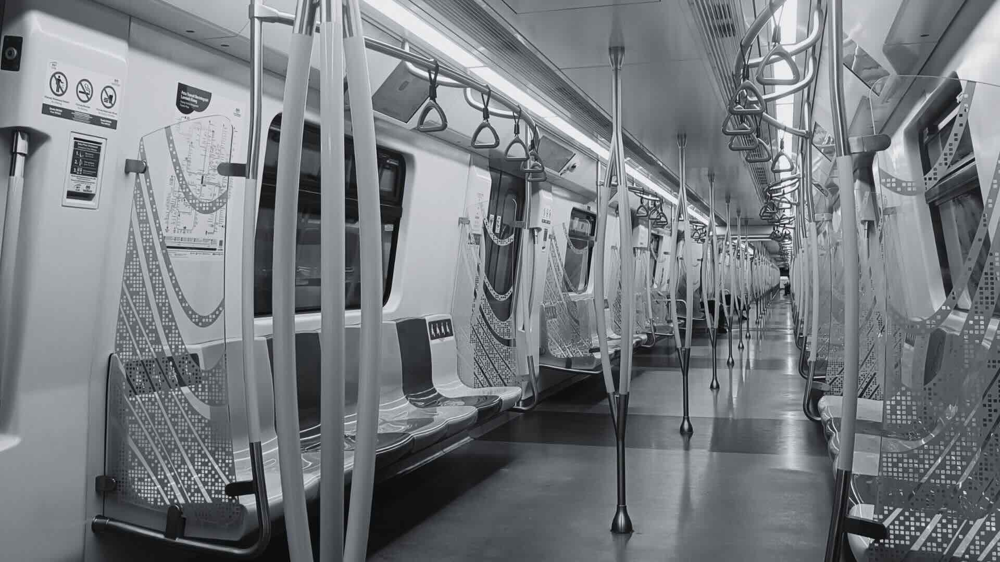

Exploring factors behind low MRT passenger numbers in Kuala Lumpur and strategies for growth.
This article aims to investigate the factors contributing to the underwhelming ridership of Kuala Lumpur's Mass Rapid Transport (MRT) system. The primary issues identified include insufficient first/last-mile connectivity and a notable absence of infrastructure supporting pedestrian and human-powered modes of transportation. In this context, the article not only presents overarching concepts for improving the public transportation system, but also provides specific and cost-effective recommendations for the MRT Putrajaya Line that could lead to a significant increase in ridership.
In 2010 it was decided by the Malaysian government to implement a state-of-the-art Mass Rapid Transit (MRT) for Kuala Lumpur to achieve the following goals:
As of 2023, two lines - the Kajang Line and Putrajaya Line - have been successfully constructed at a total cost of RM78 billion. Furthermore, a third line - the Circle Line - is currently in its planning phase with an additional investment of about RM45 billion. This train network is considered the largest infrastructure project ever undertaken in Malaysia.
Users of the new MRT system would unanimously attest to the world-class quality of its stations and trains, which easily rival those in cities like Seoul and Singapore. Moreover, care was taken to ensure that ticket prices are affordable for everyone. However, despite these favorable aspects, ridership falls considerably short of initial expectations. For instance, the Kajang line was originally projected to serve approximately 400,000 daily commuters. Yet, since its inauguration in 2017, actual ridership has plateaued at roughly half of that figure. Meanwhile, the average road user in Kuala Lumpur spends 75 hours each year stuck in traffic congestion.
So why haven't Kuala Lumpur residents embraced the opulent and expensive new MRT lines, preferring instead to continue using their private vehicles?"I spend about 1½ hours driving [my kids] to school and then another one to 1½ hours to drive back home. I feel like I am spending almost half my life in the car."
A citizen of Kuala Lumpur.
In essence, there are two straightforward explanations for why numerous individuals opt to brave the daily traffic-congested journey to work in their personal vehicles:
Insufficient Network Density
Commuters seek convenience and proximity to their destinations. Addressing this fundamental challenge demands dedicated politicians who recognize the vital role of public transportation and prioritize its expansion.
Inaccessible Stations
This issue runs deeper and warrants further exploration: What factors contribute to the station's inaccessibility?
During the construction phase, cost-saving measures like the avoidance of extensive tunneling work often led to the placement of MRT stations along highways or in underdeveloped areas rather than in locations where people live and work. This has resulted in disappointingly low population density around the stations. Unfortunately, valuable land adjacent to the MRT stations is frequently underutilized, occupied by:
Roads are main obstacles Like many relatively young cities in Asia and Northamerica KL completely centered the urban development around the automobile. More and more highways are cutting and dividing established neighborhoods. Not surprisingly roads and highways are the main obstacles now for commuters on the way to the train station. It is not uncommon that an apartment complex with thousands of potential MRT users is separated by an insurmountable highway from the station.
Think about adding more subheadings
Show and explain reach analysis of a rather bad station and compare it with something in another country (side-by-side pic)
Neglected pedestrian infrastructure. Pedestrian infrastructure is in a bad state at best or altogether nonexistent at worst risking the lifes of people who dare to walk, anyway. Insert Twitter post here.
erratic cul-de-sac roads and gated communities not only lead to a centralized traffic flow but makes it also harder for commuters to walk or cycle to the stations.
Motor vehicle dependent transit: Commuters who need to use the car to reach the MRT stations overflowing "Park and Ride" lots will rather drive all the way to their destination. Feeder buses in its current form are unreliable, get stuck in traffic and have a low frequency.
Sometimes major issues, e.g. LRT line out of service for 1 year. Reduced amount of coaches lead to long waiting times in between departures, etc. (Twitter post about LRT breakdown?)
Mistakes shouldn't be repeated for future projects like the Circle Line.
blabla